Model Training¶
Create a custom U-Net¶
A U-Net model is a type of convolutional neural network designed specifically for image segmentation tasks.
There are two main parts:
-
Encoder: Convolution series + max pooling which progressively reduces the image resolution while increasing the number of channels to understand the image context.
-
Decoder: Series of transposed convolutions (or upsampling) that increase resolution.
The result is a binary mask. In our case, this will be the pixels that correspond to clouds.
Baseline (Simple U-net with 3 in_channels (R, G, B))¶
Let's train with this:
SimpleUNet(
(enc1): DoubleConv(
(conv): Sequential(
(0): Conv2d(3, 64, kernel_size=(3, 3), stride=(1, 1), padding=(1, 1))
(1): BatchNorm2d(64, eps=1e-05, momentum=0.1, affine=True, track_running_stats=True)
(2): ReLU(inplace=True)
(3): Conv2d(64, 64, kernel_size=(3, 3), stride=(1, 1), padding=(1, 1))
(4): BatchNorm2d(64, eps=1e-05, momentum=0.1, affine=True, track_running_stats=True)
(5): ReLU(inplace=True)
)
)
(pool1): MaxPool2d(kernel_size=2, stride=2, padding=0, dilation=1, ceil_mode=False)
(enc2): DoubleConv(
(conv): Sequential(
(0): Conv2d(64, 128, kernel_size=(3, 3), stride=(1, 1), padding=(1, 1))
(1): BatchNorm2d(128, eps=1e-05, momentum=0.1, affine=True, track_running_stats=True)
(2): ReLU(inplace=True)
(3): Conv2d(128, 128, kernel_size=(3, 3), stride=(1, 1), padding=(1, 1))
(4): BatchNorm2d(128, eps=1e-05, momentum=0.1, affine=True, track_running_stats=True)
(5): ReLU(inplace=True)
)
)
(pool2): MaxPool2d(kernel_size=2, stride=2, padding=0, dilation=1, ceil_mode=False)
(bottleneck): DoubleConv(
(conv): Sequential(
...
(5): ReLU(inplace=True)
)
)
(final): Conv2d(64, 1, kernel_size=(1, 1), stride=(1, 1))
)
Results for a first training of 10 epochs with only 100 images:
 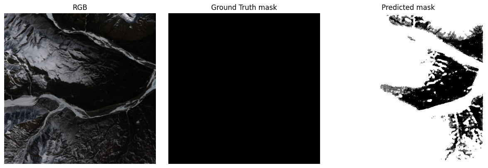
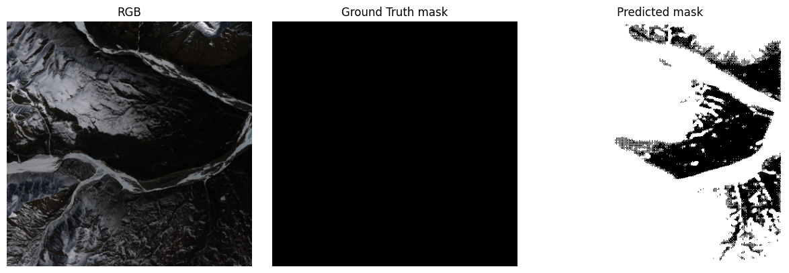
Results for a second training of 9 epochs with 4200 images:
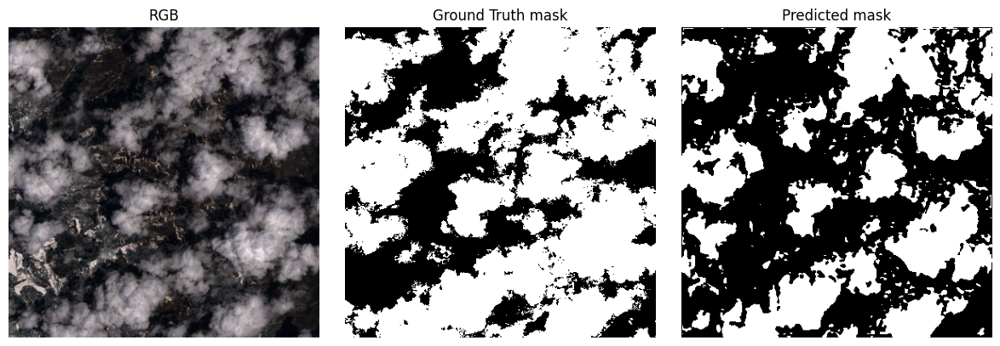 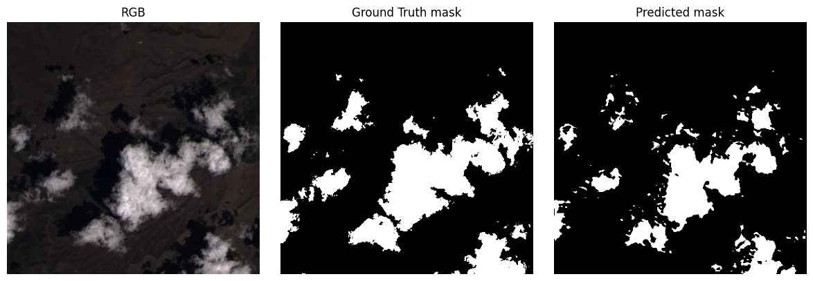
This very first model doesn't do too badly, although unfortunately, due to an error in the pipeline, I have to abandon it.
In addition, it was only based on the R, G, B layers. I had assumed that Sentinel-2 data would be quite difficult to retrieve, so I wouldn't have the NIR (near infrared) layer. However, it was actually quite simple, so I redid the whole thing.
U-net with 4 in_channels (R, G, B, NIR)¶
This U-net is based on channels R, G, B, NIR.
As we're dealing with binary segmentation (each pixel is classified as "cloudy" or "not cloudy"), we can use the BCEWithLogitsLoss loss function.
This is a function that applies a sigmoid to the model output and then a Binary Cross-Entropy between the target and the ground truth.
Remember: the sigmoid is a symmetrical S-curve centered on 0.5, which crushes the extreme values. It is used to calculate probabilities between 0 and 1. Binary Cross-Entropy measures the error between a predicted probability and an actual target value. The smaller the error, the better.
SimpleUNetV2(
(enc1): Sequential(
(0): Conv2d(4, 32, kernel_size=(3, 3), stride=(1, 1), padding=(1, 1))
(1): BatchNorm2d(32, eps=1e-05, momentum=0.1, affine=True, track_running_stats=True)
(2): ReLU(inplace=True)
(3): Conv2d(32, 32, kernel_size=(3, 3), stride=(1, 1), padding=(1, 1))
(4): BatchNorm2d(32, eps=1e-05, momentum=0.1, affine=True, track_running_stats=True)
(5): ReLU(inplace=True)
)
(enc2): Sequential(
(0): Conv2d(32, 64, kernel_size=(3, 3), stride=(1, 1), padding=(1, 1))
(1): BatchNorm2d(64, eps=1e-05, momentum=0.1, affine=True, track_running_stats=True)
(2): ReLU(inplace=True)
(3): Conv2d(64, 64, kernel_size=(3, 3), stride=(1, 1), padding=(1, 1))
(4): BatchNorm2d(64, eps=1e-05, momentum=0.1, affine=True, track_running_stats=True)
(5): ReLU(inplace=True)
)
(bottleneck): Sequential(
(0): Conv2d(64, 128, kernel_size=(3, 3), stride=(1, 1), padding=(1, 1))
(1): BatchNorm2d(128, eps=1e-05, momentum=0.1, affine=True, track_running_stats=True)
(2): ReLU(inplace=True)
(3): Conv2d(128, 128, kernel_size=(3, 3), stride=(1, 1), padding=(1, 1))
(4): BatchNorm2d(128, eps=1e-05, momentum=0.1, affine=True, track_running_stats=True)
(5): ReLU(inplace=True)
)
(dropout_bottleneck): Dropout2d(p=0.3, inplace=False)
(up1): ConvTranspose2d(128, 64, kernel_size=(2, 2), stride=(2, 2))
(dec1): Sequential(
(0): Conv2d(128, 64, kernel_size=(3, 3), stride=(1, 1), padding=(1, 1))
(1): BatchNorm2d(64, eps=1e-05, momentum=0.1, affine=True, track_running_stats=True)
(2): ReLU(inplace=True)
(3): Conv2d(64, 64, kernel_size=(3, 3), stride=(1, 1), padding=(1, 1))
(4): BatchNorm2d(64, eps=1e-05, momentum=0.1, affine=True, track_running_stats=True)
(5): ReLU(inplace=True)
)
(dropout_dec1): Dropout2d(p=0.3, inplace=False)
(up2): ConvTranspose2d(64, 32, kernel_size=(2, 2), stride=(2, 2))
(dec2): Sequential(
(0): Conv2d(64, 32, kernel_size=(3, 3), stride=(1, 1), padding=(1, 1))
(1): BatchNorm2d(32, eps=1e-05, momentum=0.1, affine=True, track_running_stats=True)
(2): ReLU(inplace=True)
(3): Conv2d(32, 32, kernel_size=(3, 3), stride=(1, 1), padding=(1, 1))
(4): BatchNorm2d(32, eps=1e-05, momentum=0.1, affine=True, track_running_stats=True)
(5): ReLU(inplace=True)
)
(final): Conv2d(32, 1, kernel_size=(1, 1), stride=(1, 1))
(pool): MaxPool2d(kernel_size=2, stride=2, padding=0, dilation=1, ceil_mode=False)
)
First experiment¶
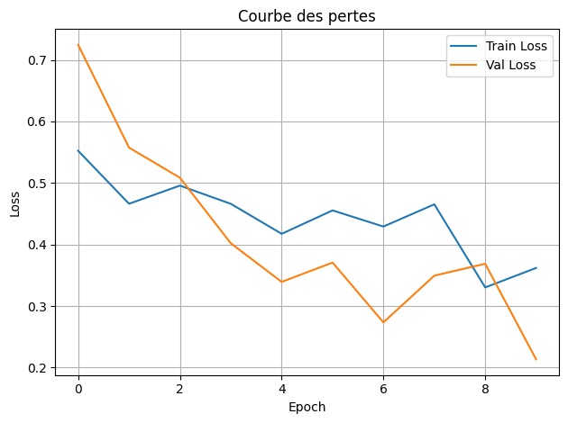 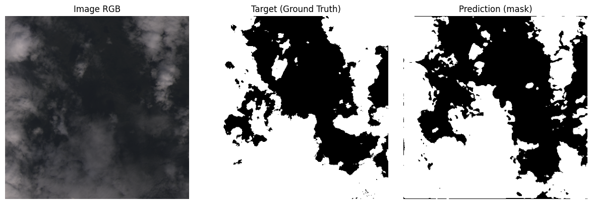 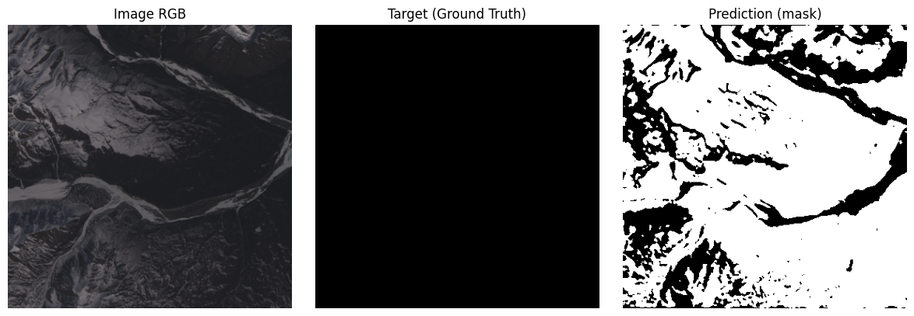
I'm very surprised at the quality of the prediction, given that I've only given a subset of 100 lines (some of which are completely empty) out of 10 epochs. However, it's clear that he's still confusing snow-capped mountains with clouds.
Second experiment¶
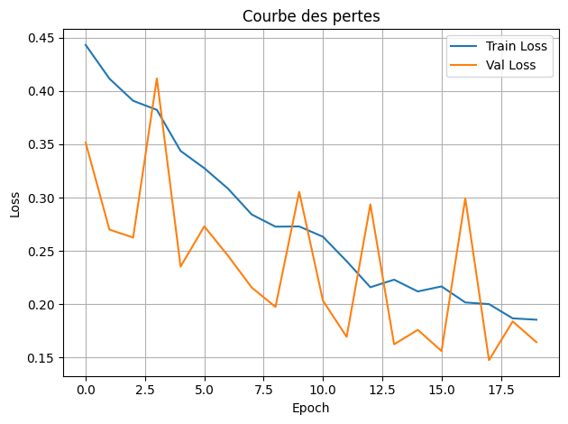 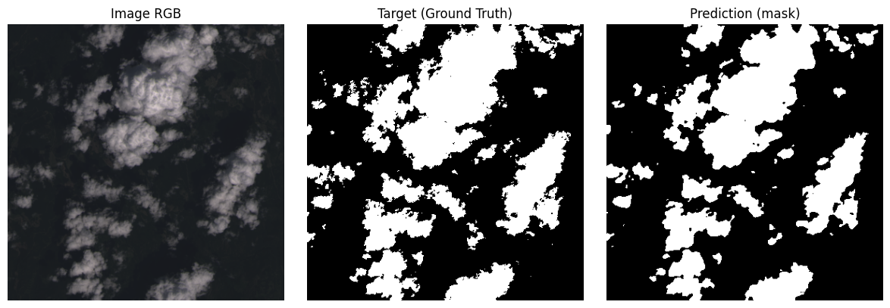 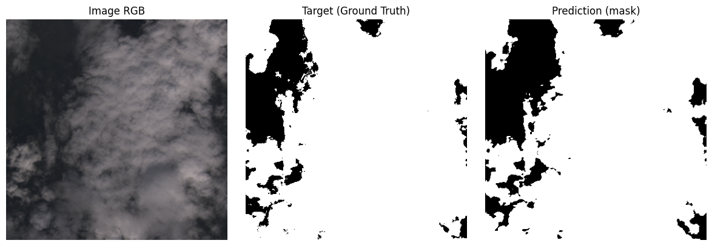 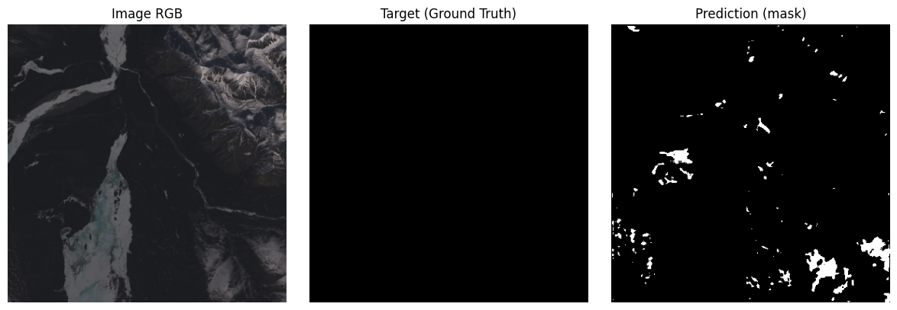 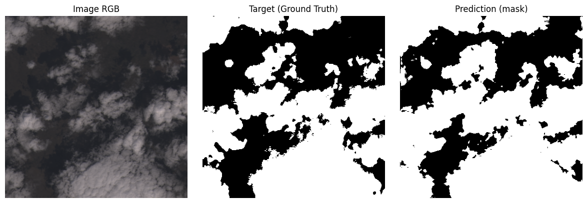 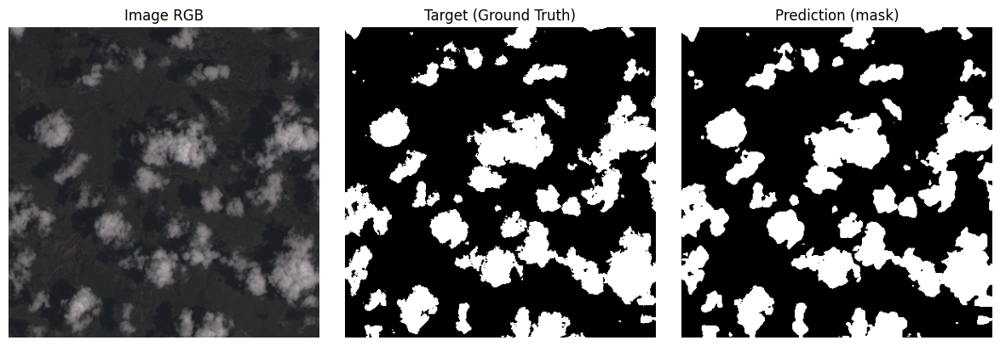